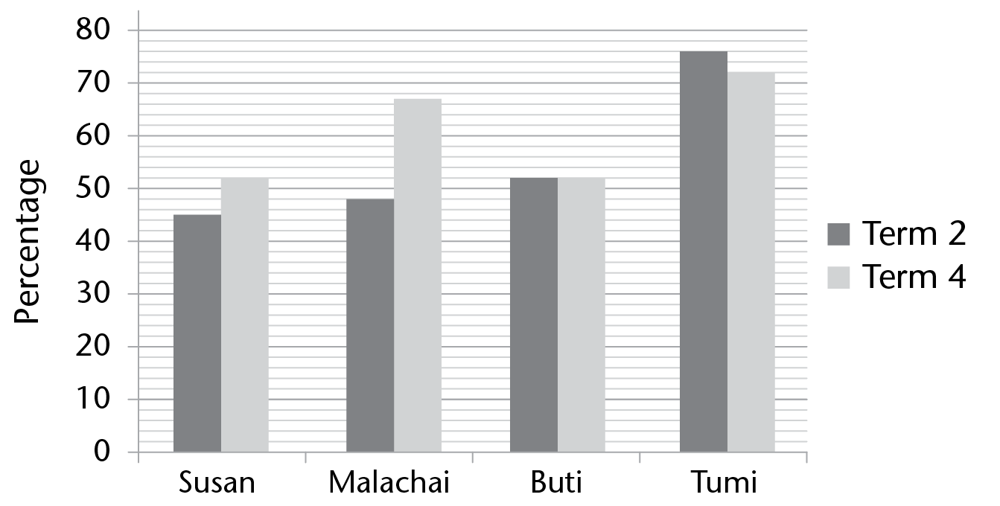

Assessment
In this section, the numbers in brackets at the end of a question show the number of marks that the question is worth. Use this information to help you determine how much working is needed.
The total number of marks allocated to the assessment is 60.
1. Write the numbers below in order from smallest to largest.
1; -4; 0; -2; 4
2. List all the integers that are between -17 and -22.
3. Calculate the following:
(a) 8 - 10
(b) 5 + (-4)
(c) -2 - 3 - 4
(d) -3 - (-2)
4. If the temperature at sunset is 12 °C, and it drops by 16 degrees overnight, what is the temperature at dawn?
5. Fill in either <, > or = to make the statement true.
(a) -1 234 ☐ -1 235
(b) 2 - (-1) ☐ 1 - (-2)
6. Describe in words the relationship between the terms in the sequence. Then use the relationship to find the next 3 terms in the sequence.
(a) -81; -77; -73; ..........
(b) 10; 4; 6; -2; 8; ..........
7. Study the flow diagram and fill in all the missing numbers:

8. Write numbers in the boxes to make the statements true.
(a) If \(x = 10\), then \(x - 14 = ☐\)
(b) If \(x = -2\), then \(x + x = ☐\)
(c) If \(x = -1\) and \(y = 7\), then \(x - y = ☐\)
(d) If \(x = -5\) and \(y = -1\), then \(x - y = ☐\)
9. Solve for x.
(a) \(x - 9 = -2\)
(b) \(x + 7 = -5\)
(c) \(x + x + x = -6\)
10. Three possible solutions are given in brackets next to the equation, but only one is correct. Which one is correct?
\(-5 - x = 10\) {-5; -15; 15}
11. Here is an equation: \(e + f = -5\)
(a) Write down a pair of integers that make the equation true. One of the integers should be positive and the other negative.
(b) Write down a pair of negative integers that make the equation true.
12. An inter-schools shot-put competition was held and the best throws (in metres) were recorded as a stem-and-leaf display:
|
5 |
0 |
1 |
1 |
1 |
1 |
3 |
9 |
|
6 |
5 |
6 |
7 |
7 |
7 |
9 |
9 |
|
7 |
1 |
4 |
5 |
7 |
9 |
||
|
8 |
1 |
1 |
6 |
||||
|
9 |
0 |
0 |
2 |
7 |
7 |
8 |
|
|
Key: 5|1 means 5,1 |
|||||||
(a) How many shot-putters were there in the competition?
(b) Only those able to throw 7 m or more in the first two throws were allowed to continue in the competition, to throw a further three times.
How many competitors were permitted to continue?
(c) What is the modal distance of the throws?
(d) What is the range?
13. The graph shows the Mathematics results of four learners in two exams: the Term 2 exam and the Term 4 exam.

(a) What is the name of this type of graph?
(b) Whose results remained constant?
(c) Who performed best in Term 4, and what was his or her percentage?
14. In a survey, 200 people were asked about the quality of services they received from their local municipality. The bar graph summarises their responses.
(a) Which response was the most common?
(b) About how many people thought the services received were either very good or satisfactory?
(c) Siyoli says that about 80 people think the services received were poor. Is Siyoli right or wrong, or is it impossible to tell from the information provided?
(d) If you had been the person responsible for this survey, what feedback would you give the local municipality?
15. Ashwell wanted to collect information on which fast food was the most popular amongst 12- to 13-year-olds. He collected information by asking 10 of his friends which fast food they liked the most.
Discuss any problems with Ashwell's process of data collection, and suggest better alternatives.
16. You are going to throw two dice at the same time, and the outcome will be the product of the numbers shown on the dice. For example, if a 3 and a 4 is thrown the outcome will be 12.
(a) List all the possible outcomes of the experiment
(b) Write down the probability that the outcome will be 6.
Give your answer as a fraction in simplest form.
17. A bag contains 20 counters of 3 different colours. I am going to take one counter from the bag, without looking.
(a) Complete the missing information in this table:
|
Colour of counters |
Number of counters |
Probability of choosing this colour |
|
red |
5 |
|
|
white |
\( \frac{1}{4}\) |
|
|
blue |
10 |
|


(b) Suppose that before taking a counter out of the bag, I add an extra white counter to the bag. How will this affect the probability that I will take a red counter?
Tick one of these options:
- It will increase the probability ☐.
- It will decrease the probability ☐.
- The probability will remain the same ☐.
- It is not possible to tell ☐.